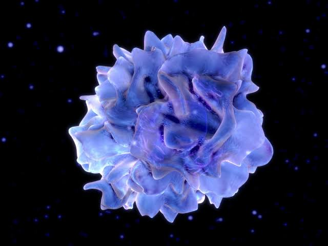

Science behind Medicine
What causes Infection?
Germs!
And they are really small!!
Types of germs
- Bacteria
- Virus
- Fungi
Medicines are the way we protect ourselves from Germs!
💊💉
Human Body's in-built defense!
Immune System
Skin
Macrophage
(White Blood Cells)

Neutrophil
Dendritic Cells
Brain of all operations
Dentritic cells produce T-Cells that can effectively fight against the invading germs
Memory T-Cells
Vaccines
Injecting an agent that resembles a disease-causing microorganism and is often made from weakened or killed forms of the microbe, its toxins, or one of its surface proteins
Vaccine goes into the blood stream
- Our immune system fights the vaccine
- Our body generates Memory T cells
- Our body is immune to the real disease
Universal Immunization Programme
- Launched in 1985 by Indian Government
- Vaccination for 12 diseases
- Every year 27 million children are being vaccinated
Importance of public sanitation
There are still many people who do not have the necessary sanitation facilities in different countries
World Health Organization (WHO)
They published a list of countries with poor sanitation
1. India
2. China
3. Indonesia
India is currently facing huge challenges in public health
Higher population leads to need for more sanitation and medical facilities
India's Population
This is a global challenge
Population of the world was 1 billion in 1800
Population was then 7.4 billion in 2016
1 billion is - 1 followed by 8 zerosCurrent World population
Our planet can sustain 10 billion people than our current population. Growing population isn't our concern. Our concern is keeping the population healthy.
The case of Polio
Polio is a virus that causes paralysis
It paralyzed 350,000 people every year
It spreads through contaminated food & water
It has no cure
But the polio virus can be vaccinated!
1988 - Global Polio Eradication Initiative (GPEI) was launched.
The challenges are huge!
- Must Vaccinate every person on the planet
- This includes people in all the villages
- Some communities are closed. They will not allow outsiders
- Required millions of volunteers and billions of money
India stopped polio in 2011!
The infection was reduced by 99%
In 2016 there were only about 40 cases of Polio
Polio is found only in Afghanistan, Pakistan and Nigeria. The people are still fighting back against the disease.
Pandemic
A pandemic is an outbreak of global proportions.
It happens when a bacterium or novel virus becomes capable of spreading rapidly.
Wet Markets
Wet markets sell live poultry, fish, reptiles, and mammals of every kind. Live-poultry markets (mostly chicken, pigeon, quail, ducks, geese, and a wide range of exotic wild-caught and farm-raised fowl) are usually separated from markets selling fish or red-meat animals, but the stalls can be near each other with no physical separation.
One time, two animals that have different viruses came into contact
This produced a new virus that can infect humans
This virus spread through air and behaved just like common cold
But this caused severe respiration issues later and started killing the infected people.
People who stayed in hotels with this virus, infected the entire hotels and places nearby.
People who went home from the hotel. Spread it across different countries.
This infection was so powerful, it infected doctors and nurses of the most advanced hospitals.
The infection started spreading in November 2002
On April 2003, Canada's National Microbiology Laboratory identified the virus
It was called Severe Acute Respiratory Syndrome
SARS
The world rushed to find a cure
Turns out Human immune system was strong enough to fight off this disease!
The source of the virus that caused this disease was found only on December 2017 on Bats near a village in china.
Pandemics are the biggest challenges faced by Scientists in today's medical industry
Preparing for the unknown requires a new infrastructure
Finishing up...
- What causes disease
- Body's immune system
- Vaccines
- Eradication of Polio
- Pandemics